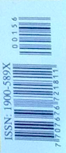

90 años de las bananeras la masacreolvidada
El abandono del monumento que conmemora ese acontecimiento simboliza la incapacidad de Colombia de narrar y entender su propia historia.
Nº 156
Semana
El abandono del monumento que conmemora ese acontecimiento simboliza la incapacidad de Colombia de narrar y entender su propia historia.
del 25 de septiembre al 21 de octubre de 2018
7.900 pesos
